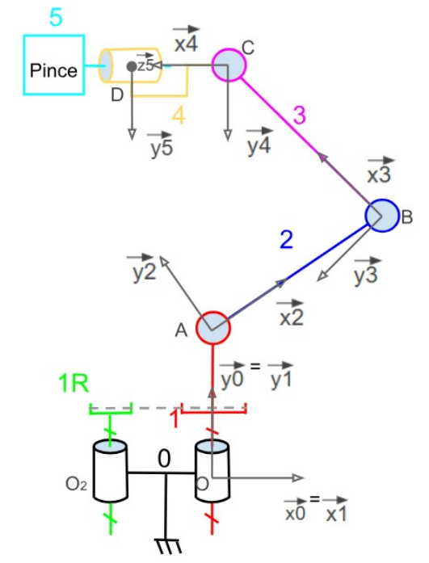
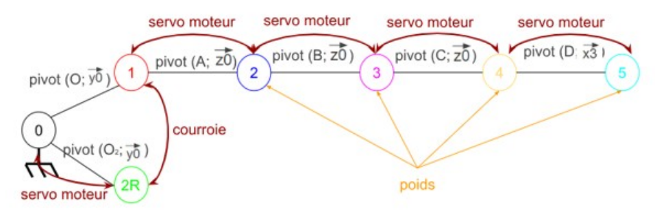
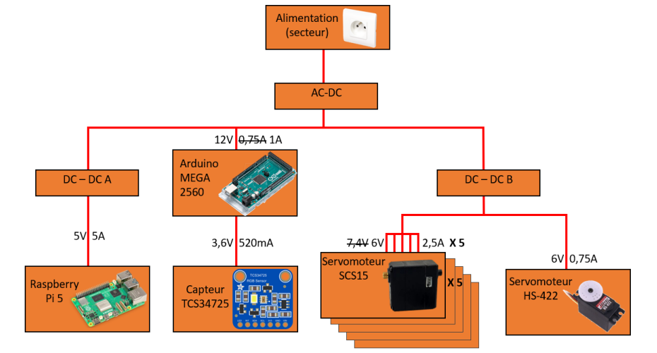
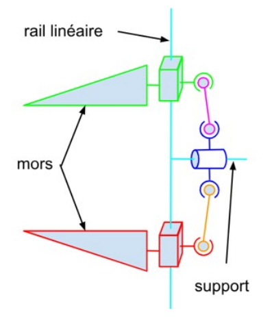
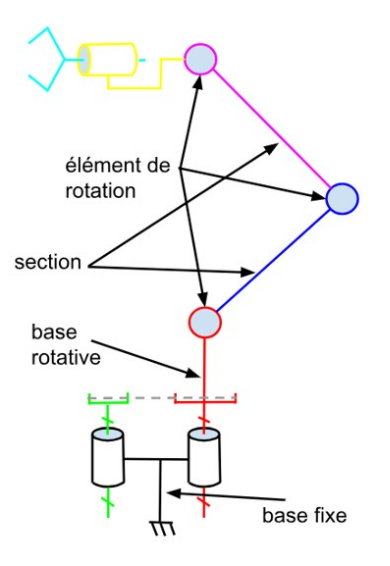

Étude technique complète du bras robotique 3 axes :
cinématique, électronique et matériaux.
Le schéma cinématique décrit l'architecture mécanique du bras robotique et les liaisons entre ses différents solides. Le graphe des liaisons associé répertorie les degrés de liberté, les actionneurs (servomoteurs, courroie) et les efforts extérieurs (poids) appliqués à chaque élément du système.


Les variables suivantes paramètrent la cinématique du système et seront utilisées dans l'établissement des équations de la dynamique du bras robotique.
Les caractéristiques de tension maximale et de courant de blocage de chaque composant sont relevées directement depuis leurs data sheet officielles afin de dimensionner correctement la chaîne d'alimentation.
| Composant | Tension max | Courant de blocage | Data sheet |
|---|---|---|---|
| Raspberry Pi 5 | 5 V | 5 A | Raspberry Pi 5— Page 3 |
| Arduino MEGA 2560 | 12 V | 1 A | Arduino MEGA 2560— Pages 6 et 8 |
| Capteur TCS34725 | 3,6 V | 330 µA | TCS34725— Pages 3 et 4 |
| Servomoteur SCS15 | 6 V | 2,5 A | SCS15— Page 3 |
| Servomoteur HS-422 | 6 V | 0,75 A | HS-422 |
Le schéma bloc ci-dessous présente la structure de l'alimentation des différents composants électriques du bras, depuis la source secteur jusqu'aux organes terminaux (Raspberry Pi, Arduino, capteur et servomoteurs).

Le dimensionnement de chaque convertisseur découle des caractéristiques d'entrée et de sortie des composants alimentés et du rendement retenu η = 0,85.
Une fois les convertisseurs dimensionnés, le schéma bloc est complété avec les valeurs de tension et de courant à chaque étage, donnant une vue d'ensemble exploitable pour le câblage final.
À l'issue de l'étude, voici la liste consolidée des composants électriques à approvisionner pour la réalisation du bras.
La sélection des matériaux suit une méthode structurée en quatre étapes successives, du besoin fonctionnel à la décision finale.
Pour mettre en place cette méthode, il faut tout d'abord identifier les différents composants présents sur le bras robot. Ils se regroupent en deux ensembles : la pince (rail linéaire, mors, support) et le bras (sections, éléments de rotation, base rotative et base fixe).


Deux matériaux sont disponibles pour la fabrication des sections du bras : le PLA (impression 3D) et l'aluminium (profilé V-slot). L'étude porte sur une poutre de référence de 250 mm de long.
Pour l'étude du PLA, on suppose une poutre de section carrée 20×20 mm avec un remplissage à 100%. D'après les données issues de GrantaEduPack, sa masse volumique est de 1,29 × 10⁻³ kg/m³.
Pour l'étude de l'aluminium, on retient un profilé V-slot 20×20 à fente 6 mm. Les profilés étant relativement standards, les calculs s'appuient sur la fiche technique du produit :
systeal.com — Profilé V-slot 20×20
L'ensemble des caractéristiques retenues pour le dimensionnement provient des fiches techniques officielles des constructeurs. Elles sont accessibles directement ci-dessous.